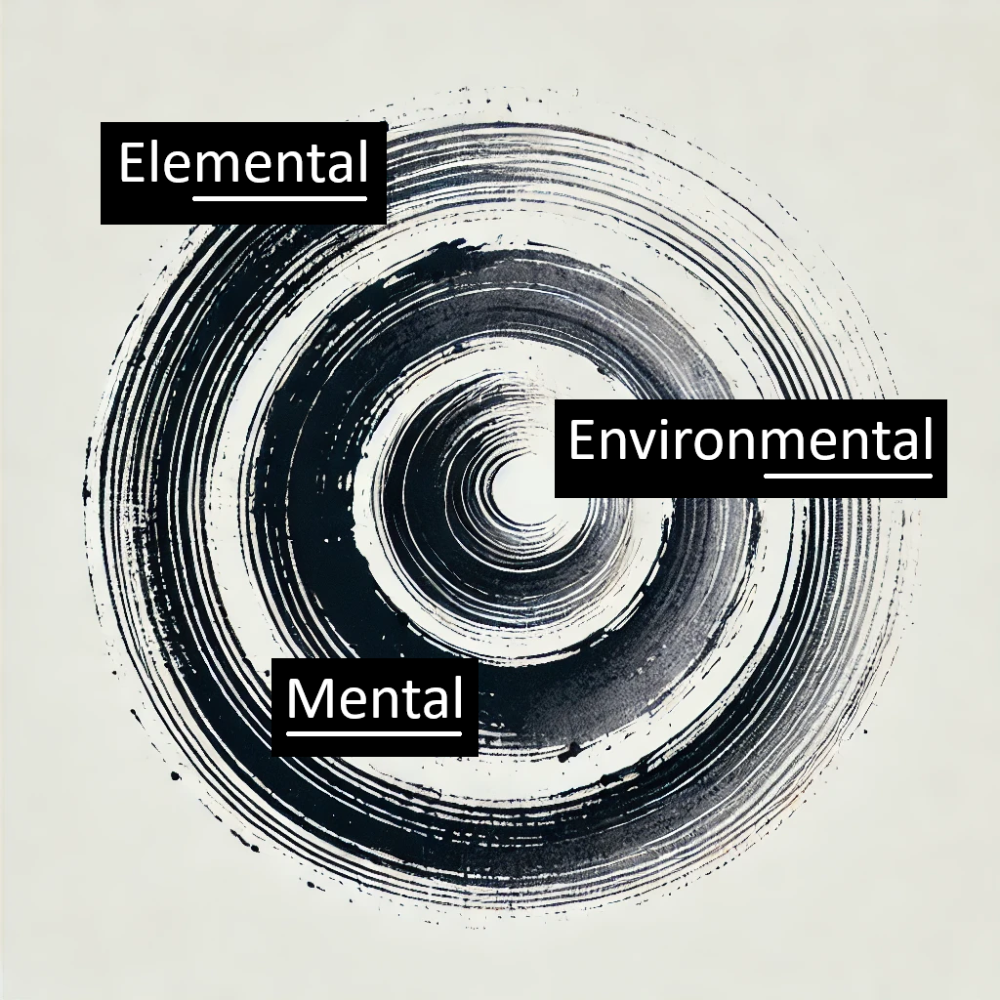

ABOUT
Me and my unique philosophy
My name is Andy. I have a BA (Hons) in Accountancy with Psychology of Human Communication. I attained a diploma in therapeutic hypnosis and undertook training in NLP (Neuro-Linguistic Programming) soon after,
becoming a member of the Society of Neuro-Linguistic Programming.
I practiced hypnotherapy for a few years before spending time raising my son and developing my own style, practice and wisdom through embracing Wu Wei, the philosophy and practice of Aikido
and by studying modern neuroscience.
I am based in Leicestershire and work in and around the county.

The 3 Circles
I believe everything is on a mental continuum. When one or more of these mental spheres is out of balance then so are you.
We will look at your personal circumstances and behaviours you wish to redress. From here we will use knowledge of modern neuroscience,
ancient wisdom and practical techniques developed through hypnotherapy to bring you back to your centre. From here you will then be free to move
in any direction you choose.
My style is unique. Although I use traditional talking therapies and hypnosis to reach certain points, this will be integrated with knowledge from
Zen, Daoism and Aikido to attain harmony in an interactive process.
WHAT CAN I HELP WITH?
* Stress & Anxiety
* Dopamine Fasting
* Optimizing Habits & Changing Behaviours
* Achieving Balance & Harmony
Space and emptiness is where solutions are found and we will investigate this in sessions. It is fundamental to my unique style that we work in
the space around you and find the space where you thrive.
As much as possible sessions will take place outdoors in the natural environment. Removing the traditional office based, human designed therapeutic sessions allows for more contact with the 3 Circles
that actually constitute what you are.
Hypnotherapy
NLP
Wu Wei

Click on the images for more information
WHERE I WORK
I am based in Leicestershire and work in and around the county.As much as possible sessions will take place outdoors in the natural environment.
Removing the traditional office based, human designed therapeutic sessions allows for more contact with the 3 Circles that actually constitute what you are.
I'd love to hear from you!
Phone: 0116 2123456
Email: mail@mail.com